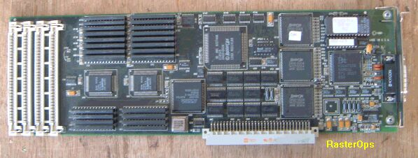

IIFx
IIFx正面
IIFxの内部
VideoボードSuperMAC

このIIFxは2002年の３月頃入手したもので、ケースはIIで、ロジックボードは IIFxにアップグレードされています。値段は何と５００円で、次のような構成でした。
・RAM 20MB
・HD WIDE 1GB (Fujitu M2864SAUに換装)
・FDD なし (とりあえず１個取り付け)
・SuperMac Video Board
・Ethernet Board
動作チェックすると、本体、拡張ボードともOKでした。
この型のMacは最初なので、急いで改造したりせず、ゆっくりと調べて行くつもりで す。
最近入手したNuBUSビデオボード２枚
RADIUS Direct Color

RasterOps 8/24XLi
(2002/10/23追記)
68Kマッキントッシュのページに戻る